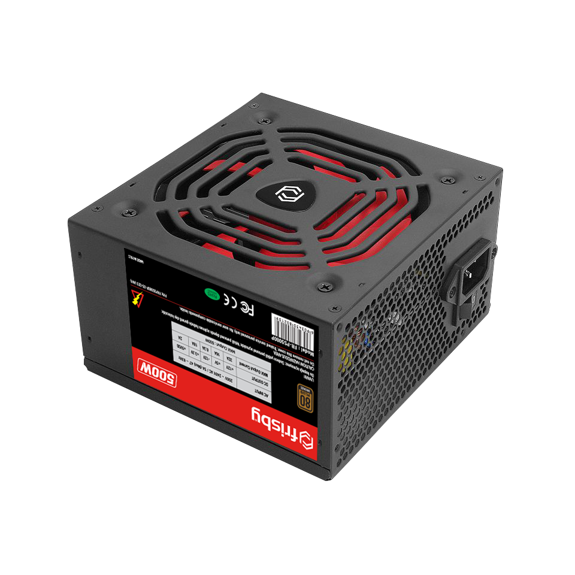

Güç Kaynağı
Güç kaynağı, bilgisayarınızın tüm bileşenlerine istikrarlı ve temiz bir elektrik akımı sağlayan temel parçadır. Doğru seçilmiş bir güç kaynağı, sistemin kararlı çalışmasını destekler, bileşenlerin ömrünü uzatır ve verimli enerji kullanımı sağlar.
Güç Kaynağının Temel Özellikleri
Güç kaynakları, çeşitli özellikleriyle sistem performansını etkiler. İşte en önemli özellikler:
1️⃣ Verimlilik
%80, %80+ Bronze, Silver, Gold, Platinum ve Titanium gibi verimlilik sertifikaları, güç kaynağının ne kadar verimli çalıştığını gösterir. Yüksek verimlilik, daha az ısınma ve enerji tasarrufu anlamına gelir.
2️⃣ Güç Kapasitesi
Güç kaynağının watt değeri, sistemin ihtiyaç duyduğu toplam gücü karşılayabilmesi açısından önemlidir. Bilgisayar bileşenlerinin toplam güç tüketimini karşılayacak kapasitede bir güç kaynağı seçmek kritiktir.
3️⃣ Bağlantı Noktaları
Farklı güç gereksinimlerine uygun olarak, güç kaynakları; ATX 24-pin, EPS 8-pin, PCIe 6+2 pin ve SATA gibi çeşitli bağlantı noktalarına sahiptir.
4️⃣ Güvenlik Özellikleri
Aşırı gerilim, aşırı akım, kısa devre ve termal koruma gibi güvenlik önlemleri, sistemin zarar görmesini engelleyen önemli unsurlardır.
Güç Kaynağı Seçerken Dikkat Edilmesi Gerekenler
Seçiminizi yaparken göz önünde bulundurmanız gerekenler:
✔ Güç Kapasitesi: Sisteminizin ihtiyaç duyduğu watt değerini karşılayabiliyor mu?✔ Verimlilik Sertifikaları: Yüksek verimlilik ile enerji tasarrufu sağlıyor mu?
✔ Bağlantı Çeşitliliği: Tüm bileşenlerinize uygun bağlantı noktalarını sunuyor mu?
✔ Güvenlik Özellikleri: Aşırı gerilim, akım ve kısa devre korumaları mevcut mu?
✔ Soğutma ve Gürültü: Etkili soğutma ile düşük ses seviyesinde çalışabiliyor mu?
Güç Kaynağı Çeşitleri
💻 1. Sabit (Non-Modüler) Güç Kaynakları
Tüm kabloların karttan çıkık olduğu modellerdir. Montajı kolay olabilir ancak kablo yönetimi açısından dezavantaj sağlayabilir.
🖥 2. Yarı-Modüler Güç Kaynakları
Kritik kablolar sabit, diğerleri ise takıp çıkarılabilir. Hem düzen sağlar hem de maliyet açısından avantajlıdır.
🎮 3. Tam Modüler Güç Kaynakları
İhtiyaç duyulmayan kabloları sistemden çıkararak daha temiz bir kurulum ve daha iyi hava akışı sağlar. Özellikle yüksek performanslı sistemlerde tercih edilir.